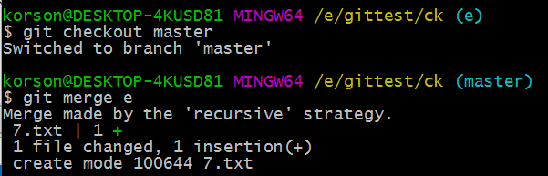

Git笔记（三）
第十一课. 再谈分支切换和checkout

第十二节.stash命令
SourceTree：图形化的git操作工具
git stash：可以把当前未commit的工作放在存储区，该存储区是一个栈，最顶上是最新的stash
列出所有存储：git stash list
恢复最近存储：git stash pop
你指定版本号为stash@{1}的工作取出来：git stash apply stash@{1}
将所有的栈都应用回来：git stash clear
第十三节.分支合并
1.快进（Fast Forward）
没有merge之前的分支情况：
执行：git checkout mastergit merge b
效果：
可以看到，这个合并是Fast forward（快进）的

由于b是master的直接祖先，所以直接就采用快进的方式将两个分支合并。
2.三方合并
情况如下：
现在将分支e合并到master分支上去：

由于e不是master的直接祖先，所以采用recursive策略（三方合并），合并效果如下：
三方合并是哪三方？
- 当前分支（提交）内容
- 要合并的分支（提交）内容
- 共同的一个祖先提交的内容
第十四节.分支合并之冲突解决
如图所示，这个图中master和f是有冲突的（同时对同一个7.txt进行不同的修改）
现在将master和f分支进行合并（其中f不能合并master，只能用master合并f）
由上图可知，f和master产生了冲突
解决冲突的办法：
使用git mergetool查找merge工具
上面没有找到，采用vimdiff，敲回车：
决定不采用这种方式merge，所以退出，各种选择no:
利用BCompare来配置mergetool并再次执行mergetool:
这个指令会进入BCompare的图形化界面：
左边是本地分支，右边是要merge的分支，中间是共同的祖先分支，我们采用先左后右的方式对两个分支进行合并。
合并成功后，输入ll查看文件情况，发现多了一个7.orig文件：
该文件保存了merge之前的内容，因为已经merge成功，所以可以直接删除：rm 7.orig
此时提交，就会去掉merging状态 ：
第十五课.分支冲突idea解决和gitignore
对于上面已经解决的冲突，如果想撤回操作，直接使用git reset –hard 提交的哈希
就可以将已经执行的操作撤回了。
在idea中打开ck文件夹，并且点开View->Tool Windows->Version Control
就可以打开git的版本插件：
不打算让git管理的文件，可以写到.gitignore
这样上面这些文件在提交时就会被忽略
提交gitignore，按ctrl+K，添加提交信息即可提交。
点击下面的Log，就可以查看提交的树状图形化界面，还可以切换分支，进行merge
对master进行merge操作：
之后的操作就和BCompare的一样了：